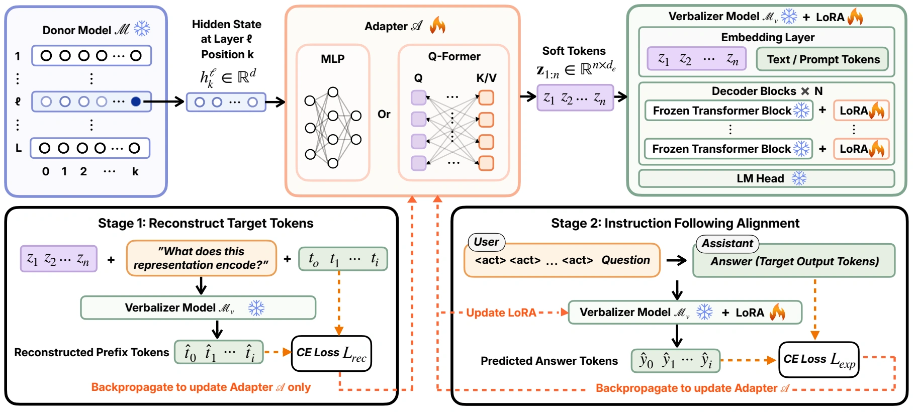
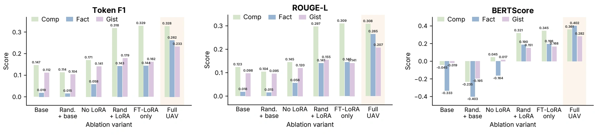

Activation-to-text alignment
Train an MLP or Q-Former adapter to reconstruct the input prefix from a donor activation. The decoder stays frozen while the adapter learns to produce decoder-readable soft tokens.
Stage 1 · Adapter only† Corresponding author
A SHARED LANGUAGE FOR MODEL ACTIVATIONS
UAV turns hidden activations into natural-language answers. Donor- and layer-specific adapters translate representations into soft tokens that a shared decoder can read.

Activation verbalization explains hidden representations in natural language, but existing methods are mostly limited to self-explanation, where each model explains only its own activations. We introduce Universal Activation Verbalizer (UAV), a shared-decoder framework that uses donor- and layer-specific adapters to explain activations from heterogeneous donor models. UAV learns a lightweight adapter that converts donor activations into soft tokens in decoder’s embedding space, and further supports adapter-only transfer by reusing a frozen decoder-side LoRA while training only a new adapter for another donor. Across classification, fact retrieval, and gist summarization, UAV remains competitive with strong self-explanation baselines while enabling cross-model verbalization across model families and scales. Ablations show that decoder-side tuning mainly improves task behavior, whereas the adapter provides the activation-grounded factual and semantic evidence. Code and data are available at our GitHub repository.
THE METHOD
The verbalizer receives activation-derived soft tokens and a question. The source text is withheld from the verbalizer at evaluation time.
Train an MLP or Q-Former adapter to reconstruct the input prefix from a donor activation. The decoder stays frozen while the adapter learns to produce decoder-readable soft tokens.
Stage 1 · Adapter onlyTrain the adapter together with decoder-side LoRA on explanation-oriented questions. The decoder backbone remains frozen as the verbalizer learns classification, factual retrieval, and gist tasks.
Stage 2 · Adapter + LoRAFor another donor, reuse the adapted decoder and freeze its LoRA. Train a new donor-specific adapter to connect the new activation space to the existing verbalizer.
Reuse the adapted decoder“Universal” refers to decoder reuse across donors. New donors require their own trained adapters; the framework reads out recoverable information and does not establish causal mechanisms.
CROSS-MODEL VERBALIZATION
Qwen3-4B-Instruct-2507 serves as the decoder for Llama, Gemma, and Yi donor models.
| Donor model | Validation loss ↓ | ROUGE-L ↑ | BERTScore ↑ |
|---|---|---|---|
| Llama-3.1-8B-Instruct | 1.6388 | 0.274 | 0.369 |
| Gemma-3-4B-IT | 1.6790 | 0.266 | 0.354 |
| Gemma-3-12B-IT | 1.6589 | 0.269 | 0.355 |
| Yi-1.5-34B-Chat | 1.5837 | 0.299 | 0.377 |
Mean generation scores are shown; per-example standard deviations are reported in the paper. Donor size alone does not determine how readily its activations can be verbalized.
| Method / adaptation | Decoder | ROUGE-L ↑ | BERTScore ↑ |
|---|---|---|---|
| Donor: Qwen3-4B-Instruct-2507 | |||
| Activation Oracle | Qwen3-4B | 0.198 | 0.234 |
| LatentQA | Qwen3-4B | 0.235 | 0.327 |
| UAV · Full | Qwen3-4B | 0.254 | 0.344 |
| UAV · AOT from Llama | Qwen3-4B | 0.260 | 0.347 |
| Donor: Llama-3.1-8B-Instruct | |||
| Activation Oracle | Llama-8B | 0.273 | 0.362 |
| LatentQA | Llama-8B | 0.285 | 0.370 |
| UAV · Full, self-decoding | Llama-8B | 0.286 | 0.379 |
| UAV · Full, cross-decoding | Qwen3-4B | 0.274 | 0.369 |
| UAV · AOT from Qwen | Qwen3-4B | 0.257 | 0.346 |
Full: two-stage adaptation on the current donor–decoder pair. AOT: adapter-only transfer with a frozen decoder-side LoRA learned from the named source donor. The paper includes task-level results, training-free baselines, standard deviations, and paired-bootstrap comparisons.
WHAT EACH COMPONENT CONTRIBUTES
Decoder-side LoRA improves task behavior. Recovering input-specific facts and meaning also depends on the trained activation adapter.

TRAINING WITH CACHED ACTIVATIONS
Caching donor activations allows verbalizer training without keeping the donor model in GPU memory.
| Configuration | Stage 1 GPU-hours ↓ | Stage 2 GPU-hours ↓ | Validation loss ↓ |
|---|---|---|---|
| 12B self-decoding | 7.1 | 26.5 | 1.6004 |
| 4B UAV cross-decoding | 2.7 | 11.6 | 1.6594 |
Appendix D.1, measured per epoch under the same setup. Lower training cost comes with a validation-loss increase of 0.059 in this comparison.
ACTIVATIONS IN NATURAL LANGUAGE
Selected fact-retrieval examples from Table 19. Source excerpts are shown for context; the verbalizer receives the question and activation-derived tokens.
SOURCE EXCERPT
Westfield Corporation was founded with the spin-off of the Westfield Group in 2014…
QUESTION
What was the name of the group this entity split from?
SOURCE EXCERPT
…an old place name for a part of Nishinari-ku in Osaka, Japan.
QUESTION
What part of Osaka is this place located in?
A plausible answer can still contain the wrong fact. These examples illustrate both recoverable information and the limits of activation verbalization.
REFERENCE
@inproceedings{zhao2026universal,
title = {Universal Activation Verbalizer: A Unified Framework
for Cross-Model Activation Explanation},
author = {Zhao, Haiyan and He, Zirui and Wang, Guanchu and
Payani, Ali and Li, Yingcong and Du, Mengnan},
booktitle = {Proceedings of the 2026 Conference on Empirical Methods
in Natural Language Processing},
year = {2026},
url = {https://arxiv.org/abs/2605.25903}
}